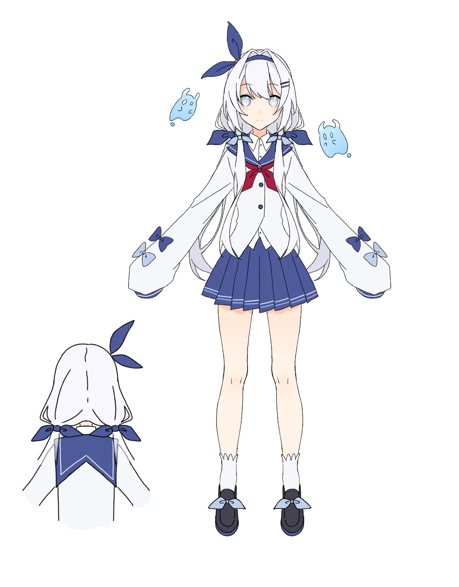

SUNFLOWER & RAIN · 向日葵与雨露精灵
熙叆
～ 魔法时间的童话 · 角色资源档案 ～
向日葵国度里，一场太阳雨落进花心，让同一朵花里开出了两个孩子—— 像太阳一样的向日葵精灵熙叆，和像雨露一样的雨露精灵聆淅。 她们一起拍下黄昏的「魔法时间」，一起守护散落的时光碎片， 也一起住在开满向日葵的「聆熙花影馆」里。
熙叆
きあい · 黄昏下的天使 · 向日葵精灵姓名熙叆（きあい）
别称小叆 · 熙叆酱 · 叆酱 · kiai酱
绰号黄昏下的天使
种族向日葵精灵
生日2 月 20 日
年龄这是女孩子的秘密
性格天然呆 · 活泼 · 乐观 · 元气 · 温柔
能力操纵花朵盛开与枯萎 · 奇特摄影能力
爱好摄影 · 吃书 · 看书 · 养花 · 和聆淅玩耍
理想希望每天都开心快乐自由一点
「熙叆」音同「心爱」——熙，是光明的意思，也寓意温暖与快乐；叆，是可爱的一面。 每到黄昏，天空美得不真实，像是有人对着天空施了魔法。她把那样的时刻，叫做「魔法时间」。

聆淅
れいせき · 雨中的天使 · 雨露精灵姓名聆淅（れいせき）
别称小淅 · 聆淅酱 · leiseki酱
绰号雨中的天使
种族雨露精灵
生日2 月 20 日
年龄这是女孩子的秘密
性格天然呆 · 三无（偶尔会笑）· 温柔
能力在指定地方施展雨露
爱好在雨中玩耍 · 听雨的声音 · 吮吸雨露
理想希望每天都快乐一点
「聆淅」就是聆听淅淅沥沥的雨声。她身旁总有两只可爱的雨水精灵「方儿」和「慕儿」， 伞把上挂着按熙叆姐姐形象定制的挂件。雨露很甜，所以她总在雨后吮吸花瓣上的露水—— 毕竟，吮吸露水是雨露精灵的本能呀。
74时光碎片 · 照片
3会动的碎片 · 影像
1主题音乐
4季 · 夏秋冬春
2位 · 熙叆与聆淅
49章 · 聆熙童话
❀
时光图库
2025 夏 ～ 2026 秋的 74 枚时光碎片，按四季与时间筛选，可放大、可下载原图。
✦
影音资源
三卷「会动的碎片」影像与主题音乐《魔法时间的童话》，在线播放与原片下载。
✧
角色设定
熙叆与妹妹聆淅的完整设定：外貌、能力、性格，以及向日葵国度的种种趣事。
📖
聆熙童话 · 电子书
《向日葵与露水的魔法时间》治愈童话：在线阅读 49 章，或下载 EPUB 随身阅读。
🗼
黄昏塔 · 卡牌冒险
像《杀戮尖塔》的肉鸽卡牌游戏：熙叆深入 1200 层黄昏塔，击败暴君与独裁者，救回聆淅。
✿
熙叆物语 · 游戏
《魔法时间的童话 ～熙叆的时光物语～》视觉小说，与她一起走过一年四季。
四季精选
从每一季时光碎片里，挑出几枚与你分享